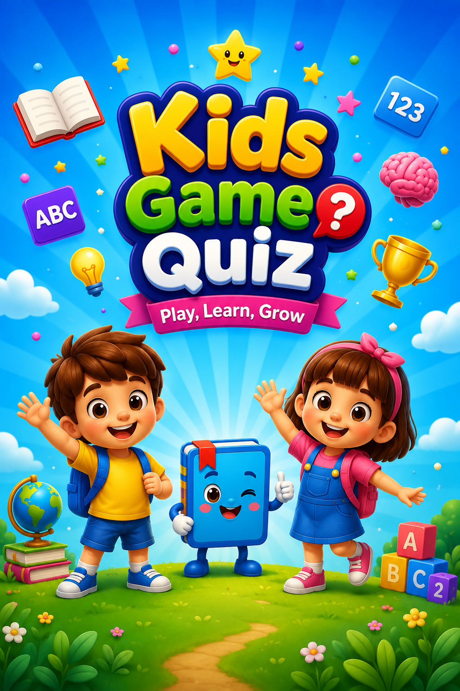

🎯
Kids Game Quiz
🎯 Kids Quiz
Continue as a guest to play
Sign in with Google
or
Continue as Guest
Guest progress is saved only on this device.
⭐
Rate Us
Enjoying the app? Let us know!
›
📤
Share with Friends
Spread the fun to others
›
🎮
More Games
See all our apps on Google Play
›
📷
Follow us on Instagram
Updates, tips & fun content
›